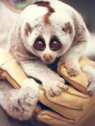
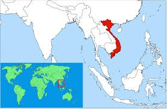

The Pygmy Slow Loris!
What is the pygmy slow loris? Well, it is a type of lemur. It's scientific name is the Nycticebus pygmaeus. They have a range of habitats in Southern, and South-east Asia.
Some more information about the loris, is that they are like a sloth. They are very slow moving, but if they are startled they can jump/leap very quickly. They enjoy staying in trees. You are more likely to see this adorable animal in the night time, considering the fact that they are nocturnal. They enjoy eating at night. They eat plant and animal material.
The Loris has very strong fingers and toes, so they can hang from trees for hours. They sleep during the day, in their trees.
The Pygmy slow loris can live up to 20 years. That is already not that long of a time. Considering the fact that they are going extinct AND they only live to be 20 years old.
Their Home
They have a range of habitats in Southern, and South-east Asia.
A main location for them is in Vietnam
They are on the endangered list because of the deforestation in their native lands.
Although they are going extinct they are manage by a species survival plan.
